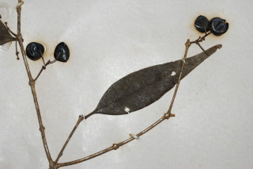
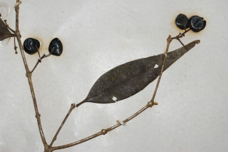
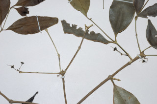
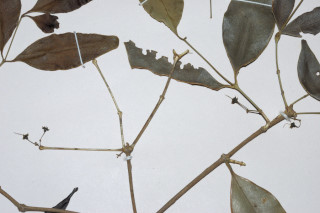

Shrubs or small tree
ಪೊದೆಗಳು ಅಥವಾ ಸಣ್ಣಮರಗಳು.
കുറ്റിച്ചെടികളോ ചെറുമരങ്ങളോ ആണ്.
குத்துச்செடி அல்லது சிறிய மரம்.
Branches zigzag; branchlets quadrangular, slender, glabrous.
ಕವಲುಗಳು ಪರ್ಯಾಯವಾಗಿ ಎಡ ಬಲ ಮುರುವುಗಳನ್ನು ಹೊಂದಿರುತ್ತವೆ; ಕಿರುಕೊಂಬೆಗಳು ತೆಳುವಾಗಿರುತ್ತವೆ ಮತ್ತು4 ಕೋನಗಳನ್ನು ಹೊಂದಿದ್ದು ರೋಮರಹಿತ -ವಾಗಿರುತ್ತವೆ.
ശാഖകള് വളഞ്ഞ്പുളഞ്ഞ് പോകുന്നതാണ്; അരോമിലമായ, നേര്ത്ത ഉപശാഖകള് ചതുഷ്ക്കോണമാണ്.
கிளைகள் ஆங்கில எழுத்து Z வடிவில் கிளைத்தவை; சிறிய நுனிக்கிளைகள் நான்கு கோணங்களுடையவை, மெல்லியது, உரோமங்களற்றது.
Leaves simple, opposite, decussate; petiole 0.2-0.4 cm long, canaliculate, glabrous; lamina 3.5-6.7 x 1-2.2 cm, ovate-lanceolate, apex caudate, sometimes narrowly acuminate with blunt tip, base acute, margin entire, coriaceous, glabrous; midrib slightly canaliculate with intramarginal_nerve; secondary and tertiary_nerves obscure.
ಎಲೆಗಳು ಸರಳವಾಗಿದ್ದು, ಕತ್ತರಿಯಾಕಾರದ ಅಭಿಮುಖ ಜೋಡನಾ ವ್ಯವಸ್ಥೆಯ -ಲ್ಲಿರುತ್ತವೆ; ತೊಟ್ಟುಗಳು 0.2 -0.4ಸೆಂ.ಮೀ. ರೋಮರಹಿತವಾಗಿದ್ದು ಕಾಲುವೆ ಗೆರೆಗಳ ಸಮೇತವಿರುತ್ತವೆ; ಪತ್ರಗಳು 3.5-6.7 X 1 –228 ಸೆಂ.ಮೀ ಗಾತ್ರ ಹೊಂದಿದ್ದು ಅಂಡ--ಭರ್ಜಿಯ ಆಕಾರದಲ್ಲಿದ್ದು ಬಾಲರೂಪಿ ಅಥವಾ ಕೆಲವು ವೇಳೆ ಮೊಂಡಾಗ್ರವುಳ್ಳ ಸಂಕುಚಿತ ಕ್ರಮೇಣ ಚೂಪಾಗುವ ತುದಿ, ಹಾಗೂ ಚೂಪಾದ ಬುಡವನ್ನುಹೊಂದಿರುತ್ತವೆ;ಅಂಚು ನಯವಾಗಿರುತ್ತದೆ;ಮೇಲ್ಮೈ ರೋಮರಹಿತವಾಗಿದ್ದು ತೊಗಲ್ಲನ್ನೋಲುವ ಮಾದರಿಯ ಲ್ಲಿರುತ್ತದೆ;-ಮಧ್ಯನಾಳ ಮೇಲ್ಭಾಗದಲ್ಲಿ ಅಂತರ ಅಂಚಿನ ನಾಳಗಳನ್ನೊಳಗೊಂಡು ಸ್ವಲ್ಪ ಮಟ್ಟಿಗೆ ಕಾಲುವೆಗೆರೆ ಸಮೇತವಾಗಿರುತ್ತದೆ; ಎರಡನೇ ಮತ್ತು ಮೂರನೇ ದರ್ಜೆಯ ನಾಳಗಳು ಅಸ್ಪಷ್ಟ.
ലഘുവായ ഇലകള്, സമ്മുഖ, ഡെക്കുസേറ്റ് ക്രമത്തിലാണ്; ചാലുളള, അരോമിലമായ, ഇലഞെട്ടിന് 0.2 സെ.മീ മുതല് 0.4 സെ.മീ വരെ നീളം; പത്രഫലകത്തിന് 3.5 സെ.മീ മുതല് 6.7 സെ.മീ വരെ നീളവും 1 സെ.മീ മുതല് 2.2 സെ.മീ വരെ വീതിയും, അണ്ഡാകാരകുന്താകൃതിയുമാണ്, പത്രാഗ്രം വാലുളളതാണ്, ചിലപ്പോള് മുനപ്പില്ലാത്ത അറ്റമുള്ള ദീര്ഘാഗ്രമാവാം, പത്രാധാരം നിശിതമാണ്, അരികുകള് അവിഭജിതമാണ്, ചര്മ്മില പ്രകൃതം, അരോമിലം; അന്തര് സീമാന്ത സിരകള്ക്കൊപ്പം ചെറുതായി ചാലുളള മുഖ്യസിര; ദ്വിതീയ ഞരമ്പുകളും ത്രിതീയ ഞരമ്പുകളും അപ്രസക്തമാണ്.
இலைகள் தனித்தவை, எதிரடுக்கமானவை, குறுக்குமறுக்கமானவை; இலைக்காம்பு 0.2-0.4 செ.மீ., நீளமானது, குறுக்குவெட்டுத் தோற்றத்தில் கேனாலிகுலேட், உரோமங்களற்றது; இலை அலகு 3.5-6.7 X 1-2.2 செ.மீ., முட்டை-ஈட்டி வடிவானது, அலகின் நுனி வால் போன்றது, சிலசமயங்களில் குறுகிய அதிக்கூரியதுடன் மழுங்கிய நுனியுடையது, அலகின் தளம் கூரியது, அலகின் விளிம்பு முழுமையானது, கோரியேசியஸ், உரோமங்களற்றது; மையநரம்பு சிறிதளவு அலகின் பரப்பைவிட பள்ளமானது மற்றும் இண்ட்ராமார்ஜினல் (விளிம்பு நரம்பு) நரம்புடையது; இரண்டாம் நிலை நரம்புகள் மற்றும் மூன்றாம் நிலை நரம்புகள் கண்களுக்குப் புலப்படாது.
Flowers in 3-flowered cymes, axillary; pedicels filiform; petals pale blue.
ಹೂಗಳು 3-ಹೂಗಳುಳ್ಳ ಅಕ್ಷಾಕಂಕುಳಿನಲ್ಲಿರುವ ಮಧ್ಯಾರಂಭಿ ಪುಷ್ಪಮಂಜರಿ -ಗಳಲ್ಲಿರುತ್ತವೆ;ತೊಟ್ಟುಗಳು ದಾರದ ರೂಪದಲ್ಲಿರುತ್ತವೆ;ಪುಷ್ಪ ದಳಗಳು ತೆಳು ನೀಲಿ ಬಣ್ಣ ಹೊಂದಿರುತ್ತವೆ.
ഇളം നീലനിറമുളള ദളങ്ങളുളള, നേര്ത്ത തണ്ടുളള പൂക്കള്, 3 എണ്ണമുളള കക്ഷ്യസൈമുകളിലുണ്ടാകുന്നു.
மலர்கள் மூன்று மலர்களுடைய சைம், இலைக்கோணங்களில் காணப்படுபவை; மலர்காம்பு மெல்லிய நூலைப்போன்றது; அல்லி இதழ்கள் வெளிறிய நீல நிறமானது.
Berry, globose; seed 1.
ಬೆರ್ರಿ ಗೋಳಾಕಾರದಲ್ಲಿದ್ದು ಒಂದು ಬೀಜವನ್ನೊಳಗೊಂಡಿರುತ್ತದೆ.
ഒറ്റ വിത്തുളള കായ, ഗോളാകാര ബെറിയാണ്.
முழுச்சதைகனி (பெர்ரி), கோளவடிவானது; விதை ஒன்றுடையது.

 

 
